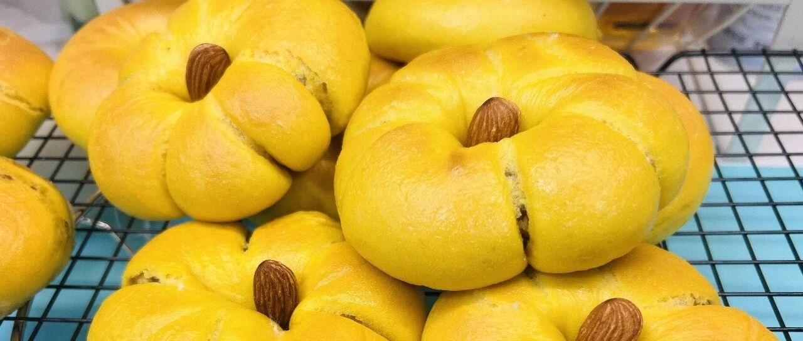

秋日"夏"午茶 - 南瓜栗子贝果
这天可太太太热了，听说今晚降温，还没看到一点迹象，11月初还是夏天的感觉，就来个“夏”午茶吧。
虽然天气炎热，但是秋季当季蔬果已经上市了，ps：秋月梨好吃的。南瓜和栗子都是当季的食物，所以值得花点时间好好吃一下。上周做了红色系，今天是黄色系，真的是温暖丰收的感觉了！
南瓜和蜂蜜都会让贝果更加柔软，所以蜂蜜尽量不要省。
水的用量可以直接用的蒸南瓜的水，余量用牛奶补充。
这个面团是我觉得最柔软细腻的面团，不用讲究手套膜，面团光滑以后就可以了，上手感真的超软。
板栗，我直接买的熟的炒栗子，主打一个省事儿吧。

第2次3分钟以后
最终状态


剩了一块小的，就做了一个小花。要说的是，需要卷特别紧，不然就容易散。如果真的没卷好，就直接剪开两股并在一起盘成小花就行，也很好看。


最近很喜欢吃贝果，也可能是因为秋天确实是贝果的季节。这种韧韧的口感真的也非常可以，推荐大家尝试。
下周做一个很好吃的饼干，需要糖粉和杏仁粉，要一起做的亲们可以先买起来！